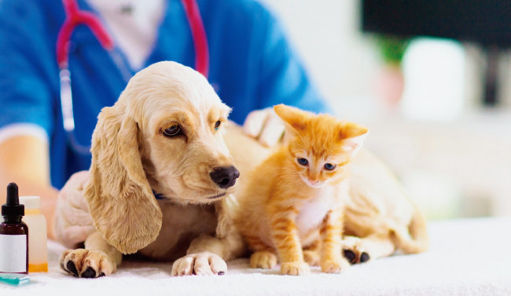

사랑으로 맺은 가족
반려동물이란?
반려동물(伴侶動物, companion animal)은 사람이 정서적으로 의지하기 위해 집에서 기르는 동물을 말한다. 과거에는 사람에게 귀여움을 받고 즐거움을 준다는 의미에서 애완동물이라는 명칭이 자주 쓰였다. 그러나 동물이 장난감 같은 존재가 아니라 사람과 더불어 살아가는 반려자라는 인식이 확산되면서 반려동물이라고 불리고 있다.

반려동물의 종류
"반려동물"이란 사람과 더불어 사는 동물로 장난감이 아닌 더불어 살아가는 동물을 말합니다. 이에 따라 사람과 더불어 살아가는 동물이라면 개, 고양이, 토끼, 기니피그, 돼지, 닭, 오리, 앵무새, 도마뱀, 이구아나, 사슴벌레, 금붕어 등 그 종류를 불문하고 모두 반려동물이라고 할 수 있습니다.
전통적인 반려동물
- 이전에는 주로 포유류(개, 고양이, 애완용 족제비, 햄스터, 다람쥐 등), 조류(십자매, 금화조, 앵무새, 잉꼬, 문조, 카나리아, 방울새, 동박새 등), 어류(금붕어, 비단잉어, 송사리, 열대어) 등을 애완용으로 사육해왔다.
새로운 애완동물
- 최근에는 팬더 마우스 등 쥐(마우스, 랫)와 같은 동물들도 새로운 애완동물로 널리 길러지는 추세다. 파충류와 양서류, 갑각류도 빈번히 애완용으로 사육되고 있다. 양서·파충류 중에서는 거북, 아홀로틀, 샌드피시 스킨크, 도마뱀붙이류, 이구아나, 필리핀의 맹꽁이인 아시아맹꽁이가 인기가 있다. 갑각류는 애완용 가재가 길러지며, 사슴벌레, 장수풍뎅이, 꽃무지, 나비 등의 곤충을 키우기도 하고, 열대 지역에서 수입한 타란튤라, 전갈, 지네, 노래기도 기른다
개별법상 반려동물의 범위
반려동물과 관련된 법률에서 정하고 있는 동물의 범위는 약간씩 차이는 있지만 개와 고양이는 공통적으로 포함되어 있습니다.
Maker
이경준
자료조사 및 메인페이지 & 팀원페이지 & 반려동물탭 프론트 제작